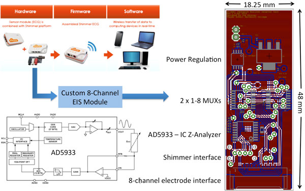

Small Form-factor Electrical Impedance Tomography (EIT)
We are interested in developing wearable EIT systems for use in ambulatory applications. This development leverages single-IC network analyzers, multiplexers, and low-power microcontrollers for recording impedances from an array of electrodes. We envision these types of systems being used to monitor disease progression or treatment response.

This wearable device, a custom printed circuit board (PCB layout shown on right), interfaces with a wearable Shimmer device. This EIT system is designed around an AD5933 impedance converter from analogue devices. System Specifications: 8 channels, ~DC-100 kHz BW, 12-bit resolution, bipolar drive.